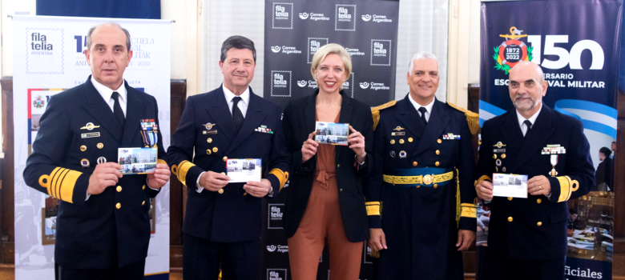
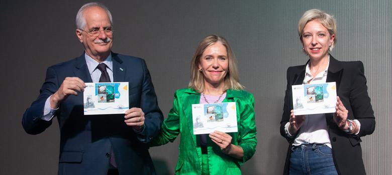

Ultimas Noticias
Correo Argentino conmemoró el 150 aniversario de la Escuela Naval Militar con la emisión de un entero postal tarjeta

El Correo Oficial de la República Argentina lanzó un entero postal
tarjeta para celebrar los 150 años de la creación de la Escuela Naval
Militar. En el acto ceremonial por este aniversario que se llevó acabo
en Ensenada, estuvieron presentes el Jefe del Estado Mayor de la Armada,
Almirante Julio Horacio Guardia; el director de la Escuela Naval
Militar, Contraalmirante, Juan Carlos Romay; el intendente municipal de
Ensenada, Mario Carlos Secco; el intendente municipal de Berisso, Fabian
Cagliardi y la presidenta de Correo Argentino, Vanesa Piesciorovski.
La Escuela Naval Militar fue fundada el 5 de octubre de 1872 por Domingo
Faustino Sarmiento. La creación de este establecimiento surge de la
necesidad de formar verdaderos profesionales marítimos, y, desde sus
orígenes, instruye y otorga formación a los jóvenes cadetes que buscan
contribuir a la defensa de los intereses nacionales en el mar.
La titular del correo de bandera expresó: “Tenemos una enorme tradición
con la Escuela Naval. Teníamos que estar en estos 150 años. Esta
institución es cuna de los guardianes de nuestra soberanía”. En ese
sentido, Piesciorovski les agradeció por su labor, como representante de
una institución que también hace Patria.
La viñeta de este entero postal está compuesta por un sello pre
franqueado con una fotografía de la ubicación actual de la Escuela Naval
Militar. En el frente se observan cuatro fotografías: la primera retrata
al buque de guerra mejor conocido como vapor “General Brown”, la primera
sede de la Escuela Naval Militar. Las siguientes imágenes corresponden a
las sedes de Palermo, caballito, y a la ubicada en la Base Naval Río
Santiago.
Al dorso, la tarjeta muestra un collage de imágenes compuesto por
cadetes en una ceremonia de izado del pabellón nacional, el edificio
principal de la escuela, unos cadetes realizando una práctica
profesional de navegación a vela y cadetes efectuando una práctica
profesional en simulador de navegación. Todos los detalles fueron
realizados en tinta dorada, y el diseño y confección general estuvo a
cargo del Equipo de Filatelia de Correo Argentino. Esta emisión ya se
encuentra disponible en las sucursales filatélicas y en la E- tienda, y
tendrá una tirada de 3.000 ejemplares.
Correo Argentino celebra los 150 años del Servicio Meteorológico Nacional con una nueva emisión filatélica

El Correo Oficial de la República Argentina se sumó a los festejos por el 150º aniversario del Servicio Meteorológico Nacional con un nuevo lanzamiento filatélico compuesto por una hoja block con cuatro sellos postales. El acto de conmemoración se realizó en la sede central del SMN, ubicada en el barrio de Palermo, y fue encabezado por el presidente de la Nación, Alberto Fernández; acompañado por el ministro de Defensa, Jorge Taiana, el secretario de Asuntos Internacionales para la Defensa, Francisco Cafiero; la directora del Servicio Meteorológico Nacional, Celeste Saulo; y la presidenta de Correo Argentino, Vanesa Piesciorovski.
El SMN se fundó el 4 de octubre de 1872, durante la presidencia de Domingo Faustino Sarmiento. Fue el tercer organismo meteorológico creado en el mundo y, desde entonces, se dedica a observar, comprender, monitorear y pronosticar el tiempo y el clima en todo el territorio nacional.
Durante el transcurso del acto, el Jefe de Estado destacó que “todos los días apostamos al desarrollo científico y tecnológico, y este Servicio Meteorológico tiene que ver con la idea de que podamos conocer, saber y prever cuestiones climáticas que a todos nos preocupan”.
“Poder conocer y saber es el secreto del futuro”, puntualizó Fernández.
En tanto que, el ministro Taiana aseguró que “desde el Ministerio de Defensa y el Servicio Meteorológico contribuimos de la mejor manera posible con una estrategia de desarrollo y la combinación del sector público y privado; quien conozca mejor el clima, pueda anticiparlo y brindar soluciones a los problemas que vendrán”.
Por su parte, la titular del Servicio Meteorológico Nacional, Celeste Saulo precisó que el SMN cumple “150 años de compromiso con nuestra sociedad”, cuyos pilares fundamentales se basan en “medir, pronosticar, proteger a la población y responder a los compromisos internacionales del país basándonos en el conocimiento científico”.
Por su parte Piesciorovski resaltó: “Es un orgullo estar acá. Estamos tan agradecidos, porque nos permiten trabajar todos los días, nos acompañan desde la mañana, podemos organizar toda nuestra logística gracias a la información que nos dan”, y agregó que “hicimos el mejor homenaje que podemos hacer desde un correo. Es una emisión filatélica con cuatro sellos, que va a formar parte de grandes colecciones y eso va a permitir que podamos dar a conocer este SMN, pionero en el hemisferio sur, en todo el mundo”.
Este nuevo lanzamiento está compuesto por cuatro sellos postales, con un valor de $150 cada uno. En la primera imagen se puede observar una fotografía de 1939, con la demostración del lanzamiento de un radiosonda en el Observatorio Central de Buenos Aires. El segundo sello es una imagen satelital que muestra la evolución de un ciclón extra tropical, que en 1984 afectó el área del Rio de la Plata. El tercer sello muestra al personal de la Base Marambio, mientras realiza una medición de ozono con un espectrómetro. Por último, la cuarta imagen muestra a la aurora austral en la Base Belgrano II, en la Antártida Argentina.
Las fotografías que componen esta hoja block buscan representar hitos históricos para el organismo que celebra su 150 aniversario, y la emisión fue íntegramente diseñada por el Equipo de Filatelia de Correo Argentino. Ya se encuentra disponible en todas las sucursales filatélicas de Correo Argentino y la E-Tienda ingresando en www.correoargentino.com.ar .